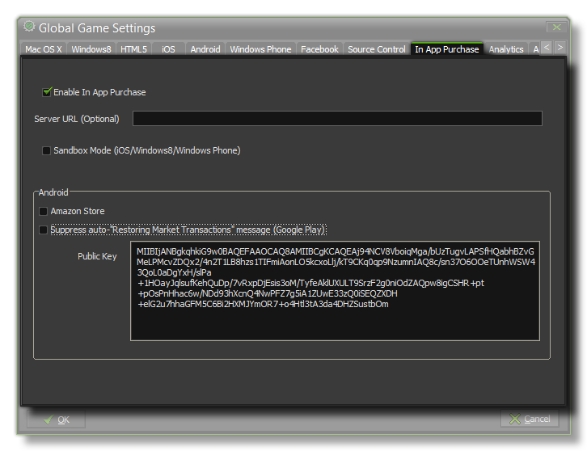

To enable in app purchasing capabilities with your GameMaker:Studio title, you should check the “Enable In App Purchase” check-box available on this tab. If you wish to make use
of a proprietary web server for retrieving available products (allowing you to dynamically update the set of products available for a title without the need to update your title) and/or for verifying Apple
Store receipts then fill in the Server URL option (e.g. http://purchases.yourcompany.com/), otherwise leave this blank.
If you are wanting to test the IAP functionality on an iOS device, then you should check the "Sandbox Mode (iOS)". This is to be used for iOS apps when a proprietary server is in use for retrieving
available purchases and for verifying content. This will add “&sandbox=true” or “&sandbox=false” to the query string parameters for the verification url (i.e. it
will now be
http://{yourserverurl}/admin/verify?receipt={receipt_data}&sandbox={flag})
This allows you to target the correct apple.com URL for verifying the receipt whether in development (sandbox) or a released product. You should also note that for iOS, the
iOS Global Game Settings App id must have the correct reverse URL format, EG: com.[Company].[GameName]
Below this is the Android section, where you can mark your game as using the Amazon Store, and you can also choose to suppress any "restoring Market Transactions" messages
should you be using Google Play. A further section is supplied for Google Play too, which is a space for adding in your Android Public Key. This is a key code supplied by Google
as a protection method for your game. This licence can be found by going to your Google Play Developers Page and then
selecting the option Edit profile. Once on the profile page, scroll down to the section titled "Licensing & In-app Billing" and there you should find the Public key that is needed for
this functionality to be enabled.
For more detailed information on in app purchases, the available GameMaker:Studio functions and proprietry server setup, please see the section
Reference - In App Purchases.
NOTE: This functionality is limited to the Professional Version of GameMaker:Studio.